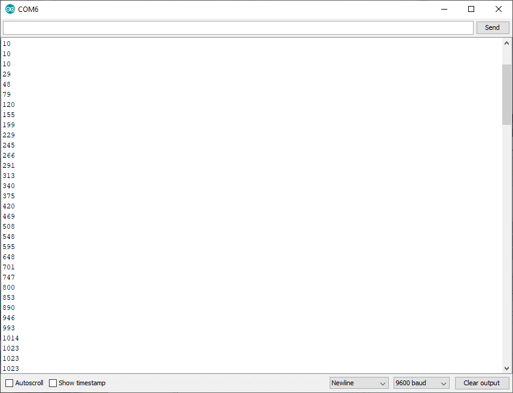
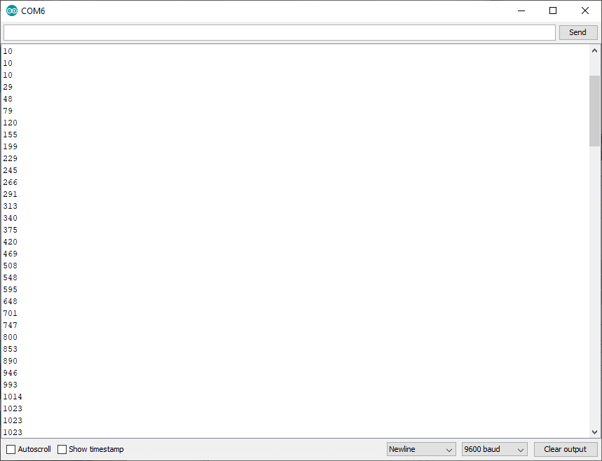
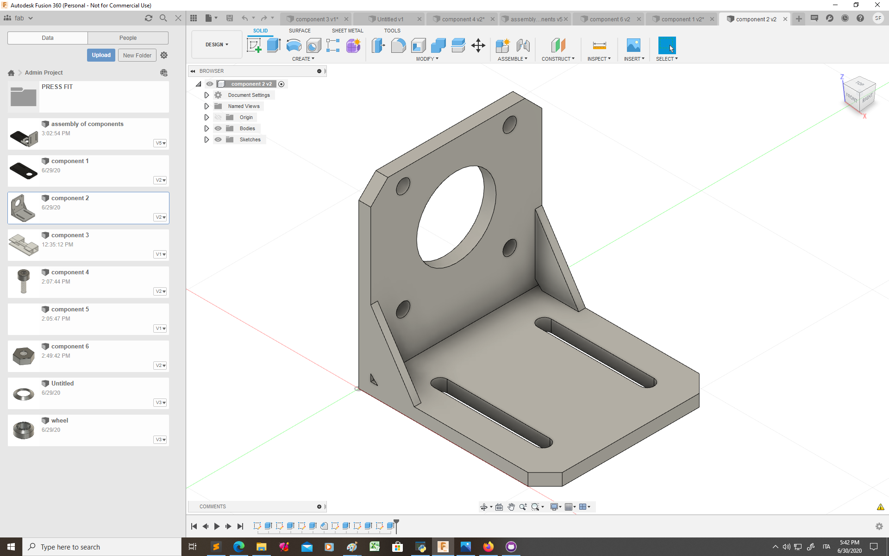
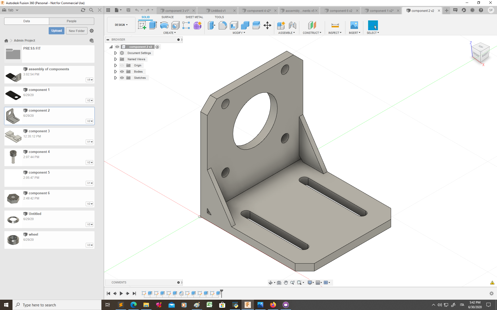
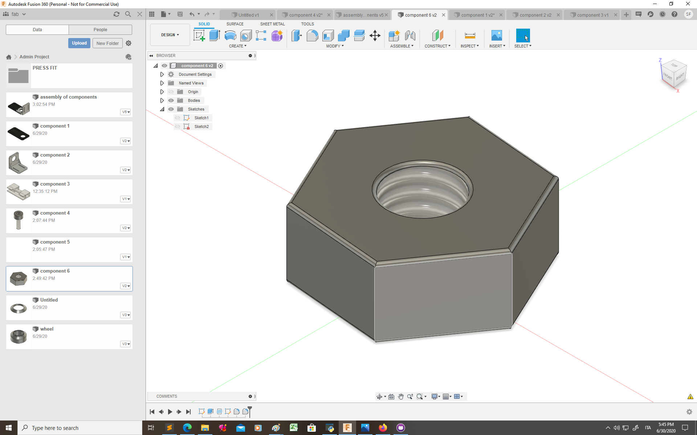
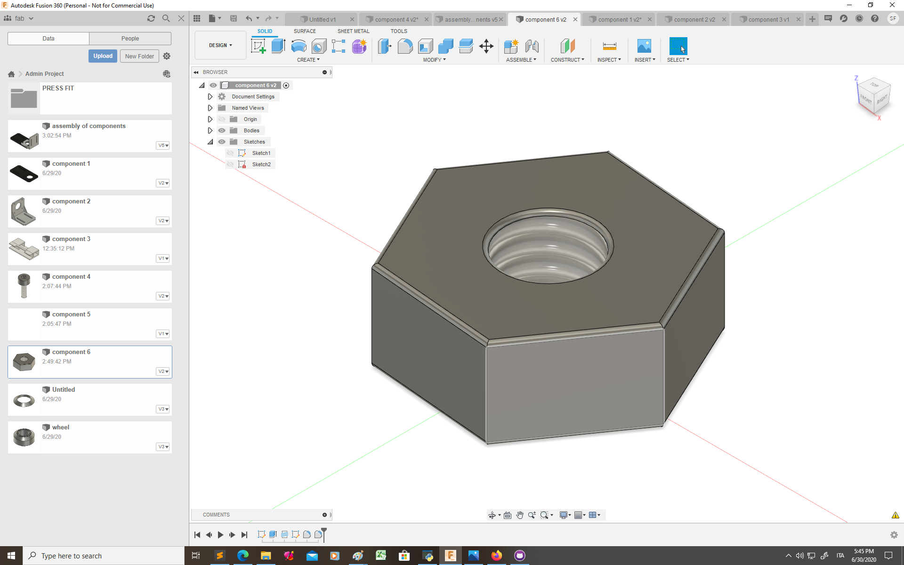
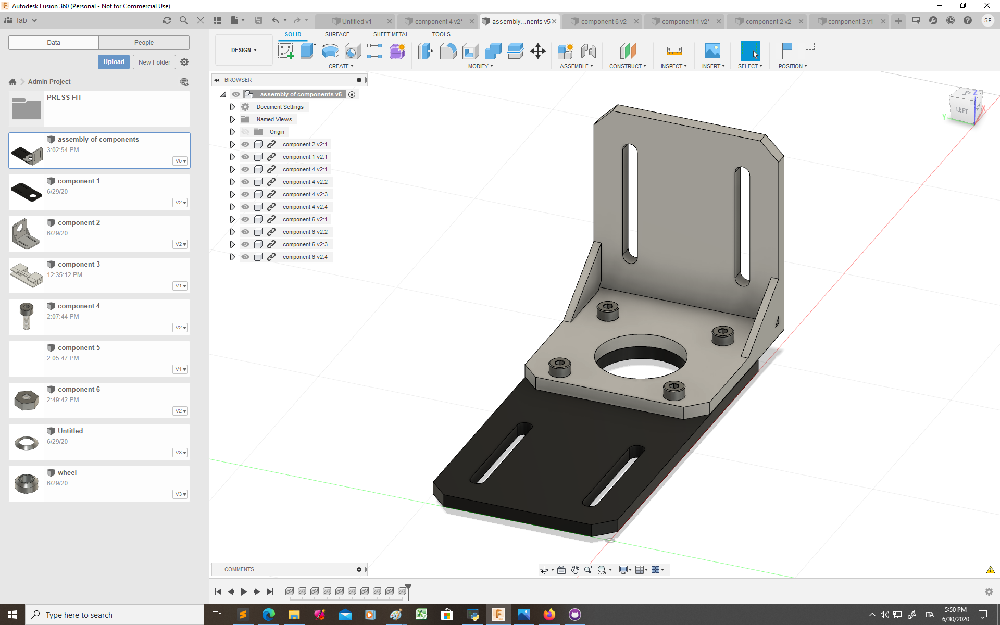
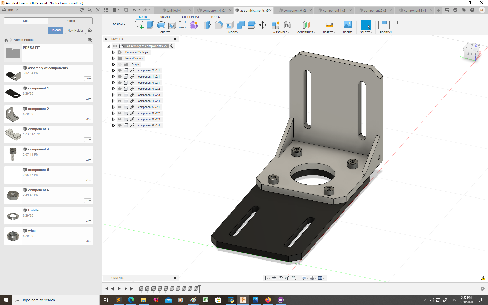

Resistors are circuits elements that dissipate power, inside of them there is a voltage drop that is proportional to the resistance of the resistor. the resistance of a resistor can be measured with a multimeter:
Two resistor are in parallel when across them there is the same voltage drop, while two resistors are in series when the same current flows across them:
A wire of a circuit can be considered as a perfect conductor. in perfect conductors electric potential is uniformly distribuited, therefore the electric potential will be the same in each point of the wire. So when are two resistor in parallel? The drop in voltage inside them must be the same, which means that the ends of the two resistors must be connected to the same wires:
here are some exaples:
When are two resistor in series? two resistors are in series when the current that flows through one must flow trough the other. Current is the amount of charge that flows per unit of time. we can think of current flowing through a circuit as water flowing through pipes. If there is a junction, all the current that goes in the junction must go out, therefore if one wire devides into two the curents inside the two wires must be less than the current in the first wire (i=i1+i2). So two resistors are in series if all the current that comes from the first resistor goes into the second without being divided by a junction:
here are some exaples:
A potentiometer is a circuit element that is similiar to a resistor because it dissipate power, but has three terminal. The voltage drop can be devided between the two termials: it works like two resistor in parallel in witch you can cange the resistance as you prefer keeping the equivalent resistance (R1+R2) constant. here is my circuit with a potentiometer:


i have created a circuit with the potentiometer and run the arduino examle program "AnalogReadSeries" to reed the different values of the voltage

To read the values see the voltage changing i have changed the program so that the interval between two value was 0,5 seconds instead of 1 millisecond
 

The values of the voltage (between 0 and 3.3V) were rescaled from 0 to 1024, threfore I changed the program to obtain the actual values
Here are some photos of the circuit and the measure that I have taken with the multimeter"
The LED has two leads of different lenghts, the longer one is the anode and the shorter one is the cathode. Current flows from the anode to the cathode therefore to light an LED you must connect the anode tho the higher potential and the cathode to the lowest potential. if the voltage drop is bigger the LED is brither, if the voltage drop is smaller the LED is less bright
 

 


After all the components were ready I created this assembly:
 
